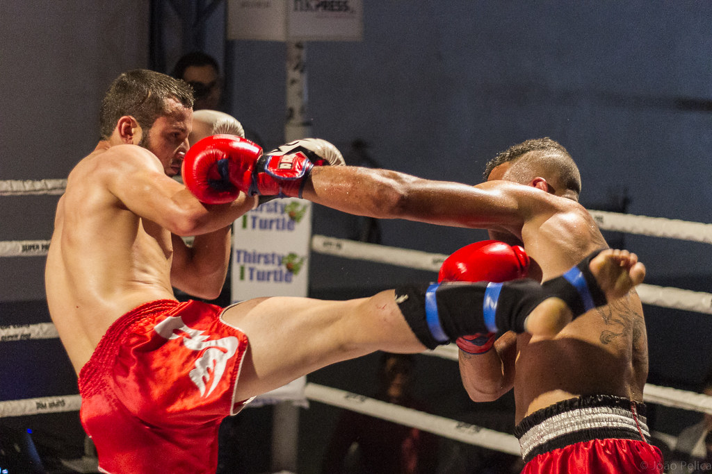
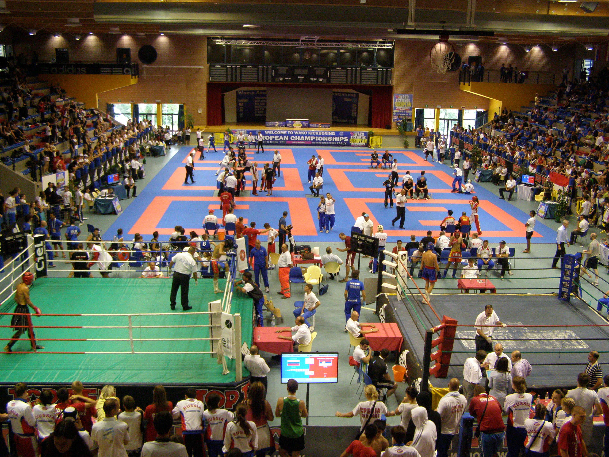

Kickboxing Ireland was founded in 1982 and is a national Governing Body for Kickboxing on the Island of Ireland, recognised by the Irish Sports Council as such under the auspices of the Irish Martial Arts Commission. Kickboxing Ireland changed the organisational name from All Styles Kickboxing Association of Ireland, in 2012 following a two year defined transition period. To reflect the true nature of the all-Ireland organisations as to the body itself and the sport it develops, manages and operates on the island of Ireland. Kickboxing Ireland has audited accounts dating all the way back to 1993.
Kickboxing Ireland run three regional All Ireland Championship qualifiers. Over 800 Junior/cadet/Younger Cadet competitors will participate in the various regions. The top two competitors from each division will then go on the All Ireland Finals. The Senior national Championships are held on two dates annually for team selection. The top competitor who wins at both events will represent Ireland at the World or Continental WAKO Championships later in the year. Each year on average 2,400 Junior Athletes and 1200 Senior compete at these events.
